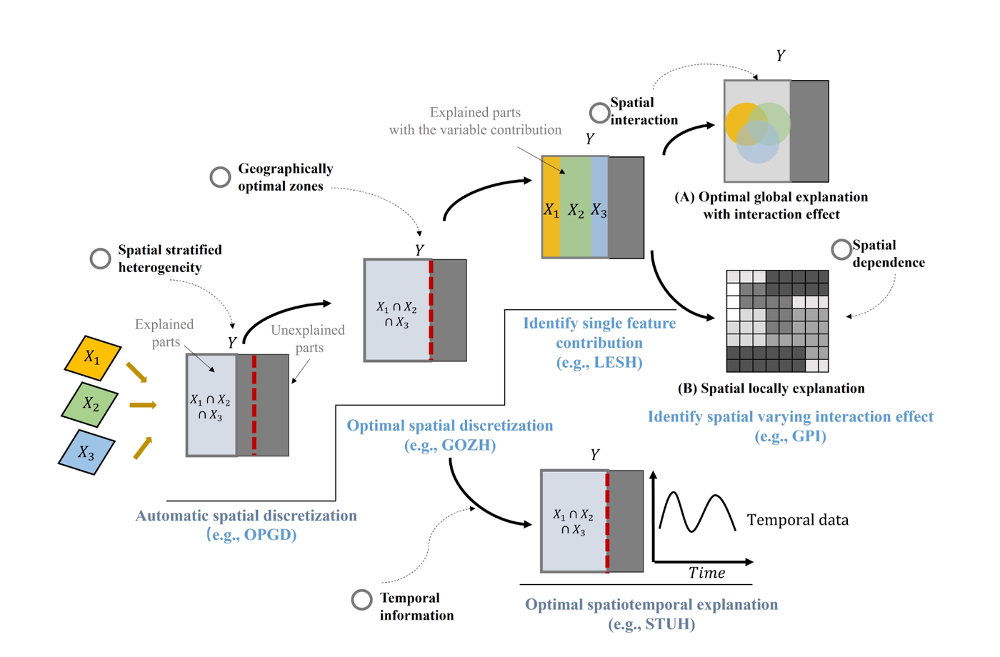
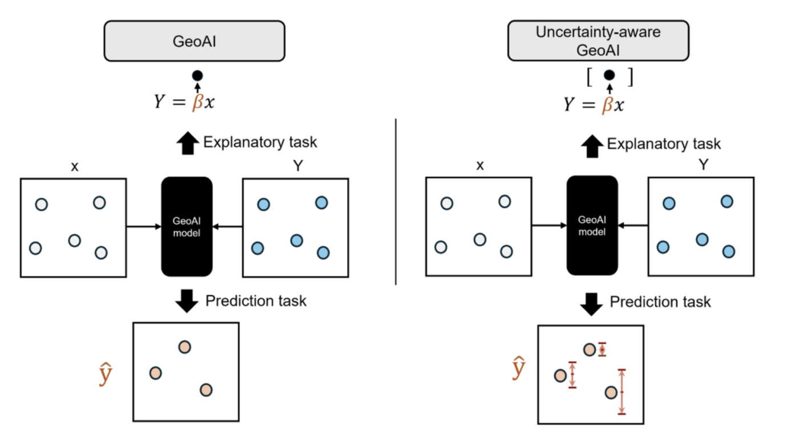
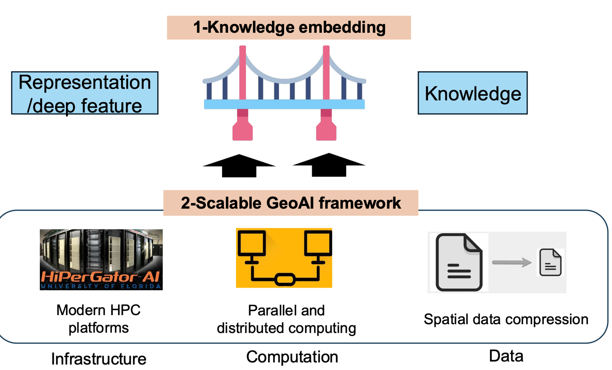

My research develops methods at the intersection of GeoAI, spatial data science, and spatial statistics — with a focus on explainable, uncertainty-aware, and reproducible spatial analysis, and recent work on LLM-driven geospatial model discovery.
Developing spatial models that explicitly encode geographic structure — spatial heterogeneity, dependence, and interaction — into prediction and association analysis. Key methods include generalized spatial heterogeneity models, focal-feature regression kriging, and spatially stratified frameworks.

Building reliable, interpretable, and uncertainty-aware geospatial AI. Core contributions include GeoConformal prediction for model-agnostic spatial UQ, GeoXCP for uncertainty quantification of spatial explanations, and visual analytics frameworks for understanding predictability in spatial data.

LLM-driven geospatial model discovery, cross-domain transfer, and scalable urban analytics. Flagship work includes GeoEvolve (multi-agent LLMs for automated spatial model development) and graph-based methods for uncovering overlapping community structure in urban mobility.

Doctoral research at TUM focused on spatial association modeling, spatial interpolation, and multi-sensor data fusion. Earlier work at PKU addressed population density modeling and remote sensing. See the publications page for a full list.